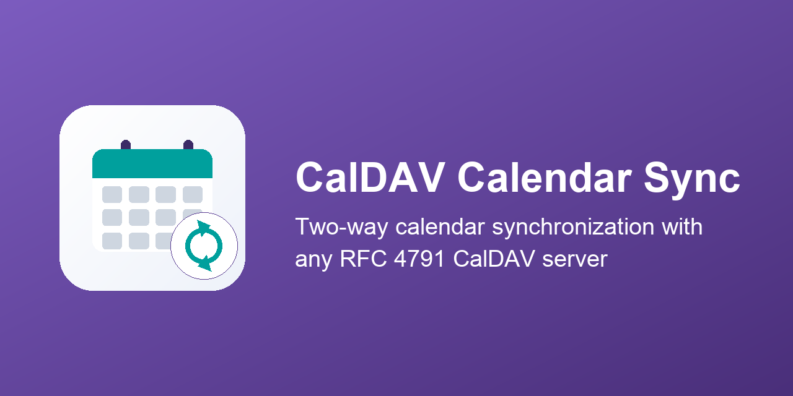

Synchronizes Odoo's Calendar app with any standards-compliant
CalDAV server (Nextcloud, Radicale, Baïkal, Fastmail,
iCloud, …), the same way the core
google_calendar / microsoft_calendar
modules sync with their respective providers.
Each user can add any number of CalDAV calendar accounts (URL + username + password or app-specific password) from their Preferences — each one syncs independently, with its own credentials and sync cursor.
Uses RFC 6578 sync-collection when the server
supports it (incremental and cheap), falling back to a
getctag + full report comparison otherwise.
Pushes local calendar.event creates, updates and
deletes back to the server, using ETag
preconditions to avoid clobbering concurrent remote edits.
Runs automatically on a scheduled action (every 15 minutes by default) and can also be triggered manually from Preferences.
Recurring events sync in full, including per-occurrence
exceptions (RECURRENCE-ID overrides and
EXDATE), not just the master rule.
Tick Read-Only Subscription on an account for calendars you can only view — subscribed holiday feeds, team calendars you lack write access to, ICS subscriptions. Odoo still pulls remote changes on every sync but never pushes, and username/password become optional for public feeds.
No extra Python packages are required: this module only relies on
requests, lxml and vobject,
which are already core Odoo dependencies.
See README.md in the module for setup steps, known
edge cases and other limitations.
Licensed under LGPL-3.